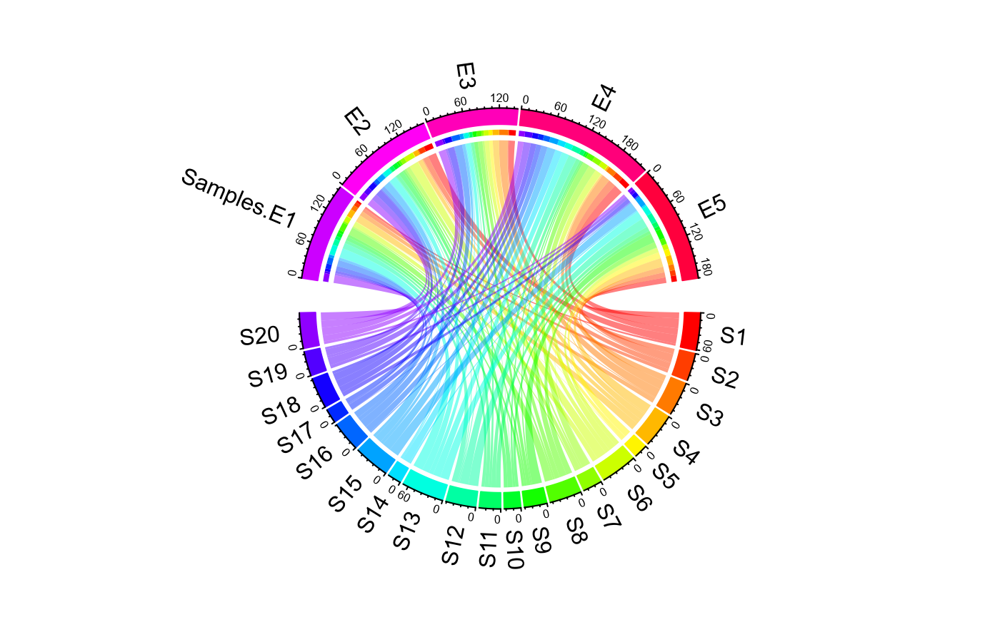
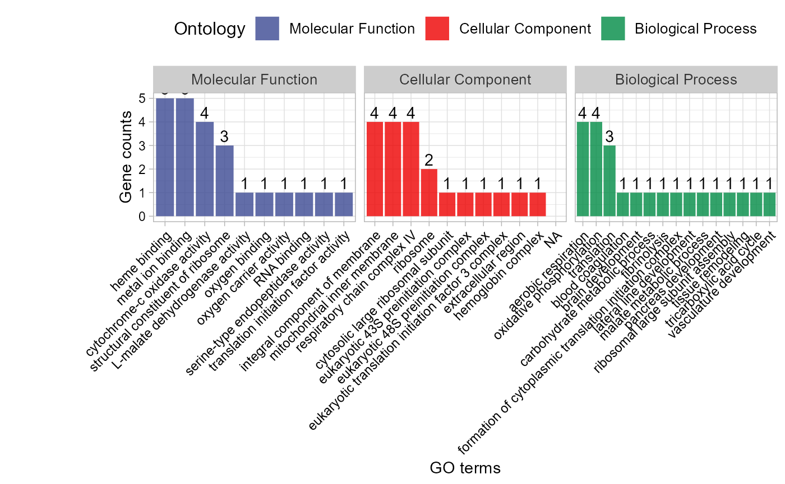
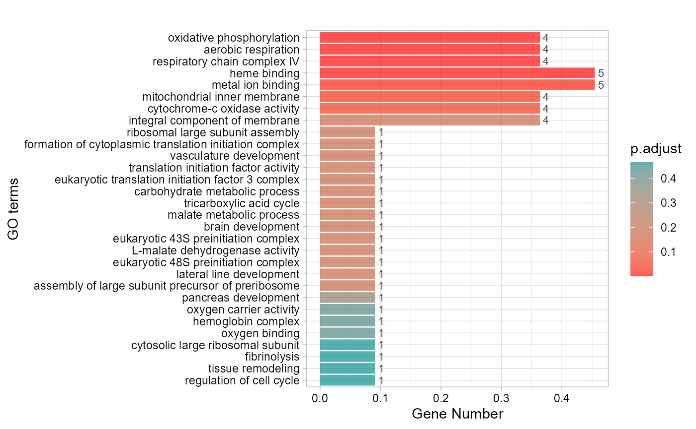
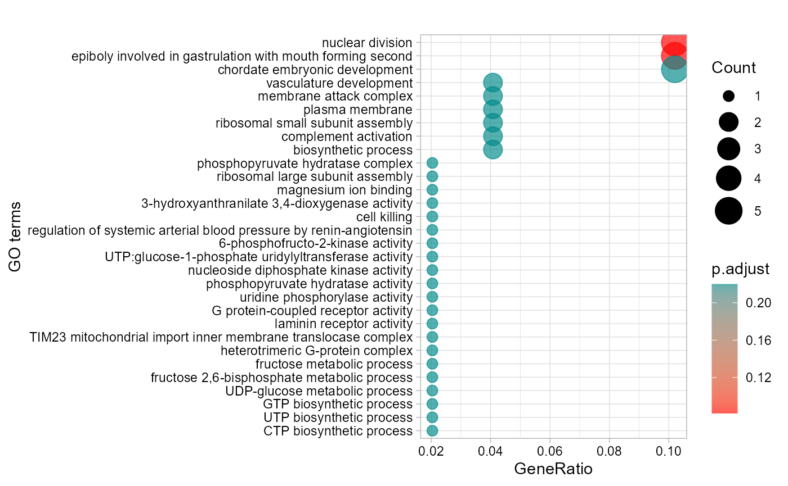
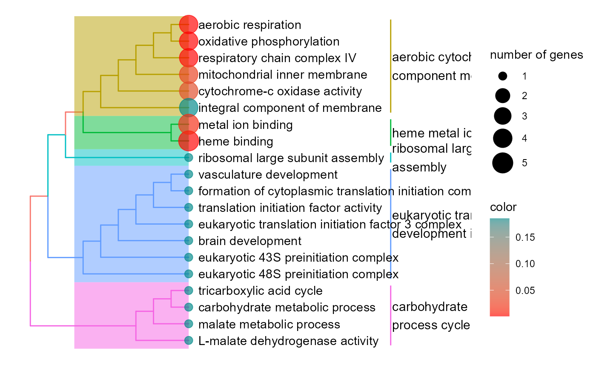
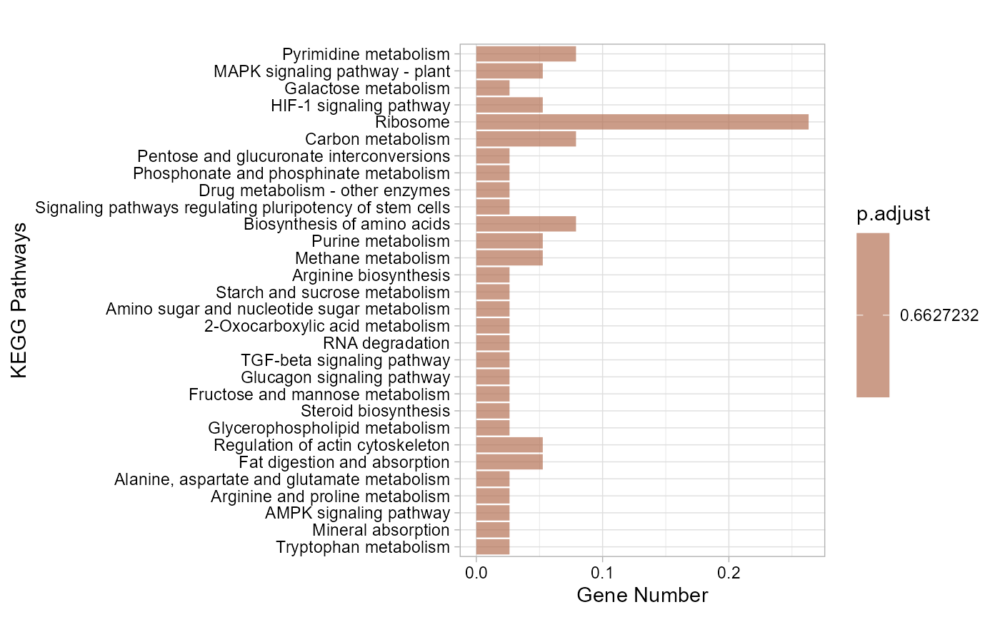
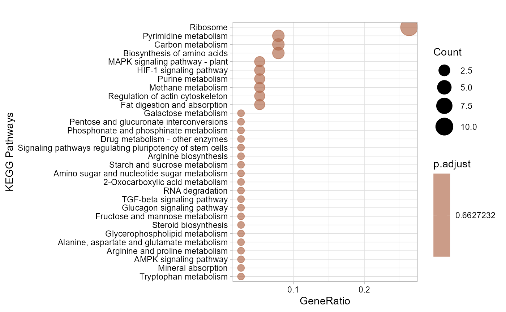
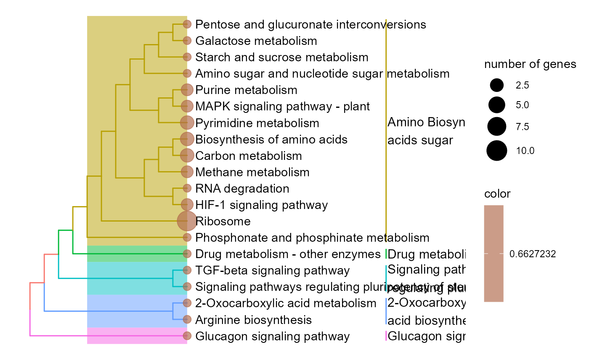

5. GO and KEGG Enrichment
5.1 chord_plot
Chord plot for visualizing the relationships of pathways and genes.
library(TOmicsVis)
#> Loading required package: e1071
#>
#> Registered S3 method overwritten by 'GGally':
#> method from
#> +.gg ggplot2
#> Loading required package: Biobase
#> Loading required package: BiocGenerics
#>
#> Attaching package: 'BiocGenerics'
#> The following objects are masked from 'package:stats':
#>
#> IQR, mad, sd, var, xtabs
#> The following objects are masked from 'package:base':
#>
#> anyDuplicated, aperm, append, as.data.frame, basename, cbind,
#> colnames, dirname, do.call, duplicated, eval, evalq, Filter, Find,
#> get, grep, grepl, intersect, is.unsorted, lapply, Map, mapply,
#> match, mget, order, paste, pmax, pmax.int, pmin, pmin.int,
#> Position, rank, rbind, Reduce, rownames, sapply, setdiff, sort,
#> table, tapply, union, unique, unsplit, which.max, which.min
#> Welcome to Bioconductor
#>
#> Vignettes contain introductory material; view with
#> 'browseVignettes()'. To cite Bioconductor, see
#> 'citation("Biobase")', and for packages 'citation("pkgname")'.
#>
#> Attaching package: 'DynDoc'
#> The following object is masked from 'package:BiocGenerics':
#>
#> path
# 1. Load chord_data example datasets
data(chord_data)
# 2. Run chord_plot plot function
chord_plot(
chord_data,
multi_colors = "RainbowColors",
color_alpha = 0.5,
link_visible = TRUE,
link_dir = -1,
link_type = "diffHeight",
sector_scale = "Origin",
width_circle = 3,
dist_name = 3,
label_dir = "Vertical",
dist_label = 0.3
)
#> rn cn value1 value2 o1 o2 x1 x2 col
#> 1 S1 Samples.E1 4 4 5 20 61 161 #FF00007F
#> 2 S2 Samples.E1 7 7 5 19 45 157 #FF3D007F
#> 3 S3 Samples.E1 9 9 5 18 55 150 #FF7A007F
#> 4 S4 Samples.E1 14 14 5 17 55 141 #FFB8007F
#> 5 S5 Samples.E1 1 1 5 16 22 127 #FFF5007F
#> 6 S6 Samples.E1 10 10 5 15 59 126 #CCFF007F
#> 7 S7 Samples.E1 3 3 5 14 31 116 #8FFF007F
#> 8 S8 Samples.E1 15 15 5 13 52 113 #52FF007F
#> 9 S9 Samples.E1 5 5 5 12 37 98 #14FF007F
#> 10 S10 Samples.E1 7 7 5 11 27 93 #00FF297F
#> 11 S11 Samples.E1 6 6 5 10 35 86 #00FF667F
#> 12 S12 Samples.E1 11 11 5 9 49 80 #00FFA37F
#> 13 S13 Samples.E1 18 18 5 8 69 69 #00FFE07F
#> 14 S14 Samples.E1 1 1 5 7 22 51 #00E0FF7F
#> 15 S15 Samples.E1 5 5 5 6 58 50 #00A3FF7F
#> 16 S16 Samples.E1 12 12 5 5 48 45 #0066FF7F
#> 17 S17 Samples.E1 9 9 5 4 23 33 #0029FF7F
#> 18 S18 Samples.E1 5 5 5 3 50 24 #1400FF7F
#> 19 S19 Samples.E1 4 4 5 2 40 19 #5200FF7F
#> 20 S20 Samples.E1 15 15 5 1 58 15 #8F00FF7F
#> 21 S1 E2 16 16 4 20 57 166 #FF00007F
#> 22 S2 E2 11 11 4 19 38 150 #FF3D007F
#> 23 S3 E2 2 2 4 18 46 139 #FF7A007F
#> 24 S4 E2 9 9 4 17 41 137 #FFB8007F
#> 25 S5 E2 1 1 4 16 21 128 #FFF5007F
#> 26 S6 E2 18 18 4 15 49 127 #CCFF007F
#> 27 S7 E2 8 8 4 14 28 109 #8FFF007F
#> 28 S8 E2 4 4 4 13 37 101 #52FF007F
#> 29 S9 E2 4 4 4 12 32 97 #14FF007F
#> 30 S10 E2 9 9 4 11 20 93 #00FF297F
#> 31 S11 E2 7 7 4 10 29 84 #00FF667F
#> 32 S12 E2 2 2 4 9 38 77 #00FFA37F
#> 33 S13 E2 13 13 4 8 51 75 #00FFE07F
#> 34 S14 E2 2 2 4 7 21 62 #00E0FF7F
#> 35 S15 E2 13 13 4 6 53 60 #00A3FF7F
#> 36 S16 E2 7 7 4 5 36 47 #0066FF7F
#> 37 S17 E2 2 2 4 4 14 40 #0029FF7F
#> 38 S18 E2 13 13 4 3 45 38 #1400FF7F
#> 39 S19 E2 12 12 4 2 36 25 #5200FF7F
#> 40 S20 E2 13 13 4 1 43 13 #8F00FF7F
#> 41 S1 E3 12 12 3 20 41 150 #FF00007F
#> 42 S2 E3 2 2 3 19 27 138 #FF3D007F
#> 43 S3 E3 17 17 3 18 44 136 #FF7A007F
#> 44 S4 E3 12 12 3 17 32 119 #FFB8007F
#> 45 S5 E3 7 7 3 16 20 107 #FFF5007F
#> 46 S6 E3 9 9 3 15 31 100 #CCFF007F
#> 47 S7 E3 4 4 3 14 20 91 #8FFF007F
#> 48 S8 E3 9 9 3 13 33 87 #52FF007F
#> 49 S9 E3 7 7 3 12 28 78 #14FF007F
#> 50 S10 E3 1 1 3 11 11 71 #00FF297F
#> 51 S11 E3 5 5 3 10 22 70 #00FF667F
#> 52 S12 E3 2 2 3 9 36 65 #00FFA37F
#> 53 S13 E3 8 8 3 8 38 63 #00FFE07F
#> 54 S14 E3 2 2 3 7 19 55 #00E0FF7F
#> 55 S15 E3 6 6 3 6 40 53 #00A3FF7F
#> 56 S16 E3 15 15 3 5 29 47 #0066FF7F
#> 57 S17 E3 1 1 3 4 12 32 #0029FF7F
#> 58 S18 E3 13 13 3 3 32 31 #1400FF7F
#> 59 S19 E3 4 4 3 2 24 18 #5200FF7F
#> 60 S20 E3 14 14 3 1 30 14 #8F00FF7F
#> 61 S1 E4 18 18 2 20 29 227 #FF00007F
#> 62 S2 E4 15 15 2 19 25 209 #FF3D007F
#> 63 S3 E4 16 16 2 18 27 194 #FF7A007F
#> 64 S4 E4 3 3 2 17 20 178 #FFB8007F
#> 65 S5 E4 1 1 2 16 13 175 #FFF5007F
#> 66 S6 E4 13 13 2 15 22 174 #CCFF007F
#> 67 S7 E4 15 15 2 14 16 161 #8FFF007F
#> 68 S8 E4 13 13 2 13 24 146 #52FF007F
#> 69 S9 E4 3 3 2 12 21 133 #14FF007F
#> 70 S10 E4 4 4 2 11 10 130 #00FF297F
#> 71 S11 E4 8 8 2 10 17 126 #00FF667F
#> 72 S12 E4 16 16 2 9 34 118 #00FFA37F
#> 73 S13 E4 14 14 2 8 30 102 #00FFE07F
#> 74 S14 E4 14 14 2 7 17 88 #00E0FF7F
#> 75 S15 E4 16 16 2 6 34 74 #00A3FF7F
#> 76 S16 E4 12 12 2 5 14 58 #0066FF7F
#> 77 S17 E4 10 10 2 4 11 46 #0029FF7F
#> 78 S18 E4 11 11 2 3 19 36 #1400FF7F
#> 79 S19 E4 14 14 2 2 20 25 #5200FF7F
#> 80 S20 E4 11 11 2 1 16 11 #8F00FF7F
#> 81 S1 E5 11 11 1 20 11 192 #FF00007F
#> 82 S2 E5 10 10 1 19 10 181 #FF3D007F
#> 83 S3 E5 11 11 1 18 11 171 #FF7A007F
#> 84 S4 E5 17 17 1 17 17 160 #FFB8007F
#> 85 S5 E5 12 12 1 16 12 143 #FFF5007F
#> 86 S6 E5 9 9 1 15 9 131 #CCFF007F
#> 87 S7 E5 1 1 1 14 1 122 #8FFF007F
#> 88 S8 E5 11 11 1 13 11 121 #52FF007F
#> 89 S9 E5 18 18 1 12 18 110 #14FF007F
#> 90 S10 E5 6 6 1 11 6 92 #00FF297F
#> 91 S11 E5 9 9 1 10 9 86 #00FF667F
#> 92 S12 E5 18 18 1 9 18 77 #00FFA37F
#> 93 S13 E5 16 16 1 8 16 59 #00FFE07F
#> 94 S14 E5 3 3 1 7 3 43 #00E0FF7F
#> 95 S15 E5 18 18 1 6 18 40 #00A3FF7F
#> 96 S16 E5 2 2 1 5 2 22 #0066FF7F
#> 97 S17 E5 1 1 1 4 1 20 #0029FF7F
#> 98 S18 E5 8 8 1 3 8 19 #1400FF7F
#> 99 S19 E5 6 6 1 2 6 11 #5200FF7F
#> 100 S20 E5 5 5 1 1 5 5 #8F00FF7FGet help using command ?TOmicsVis::chord_plot or
reference page https://benben-miao.github.io/TOmicsVis/reference/chord_plot.html.
# Get help with command in R console.
# ?TOmicsVis::chord_plot5.2 go_enrich
GO enrichment analysis based on GO annotation results (None/Exist Reference Genome).
# 1. Load example datasets
data(go_anno)
head(go_anno)
#> id
#> 1 gene_1
#> 2 gene_2
#> 3 gene_3
#> 4 gene_4
#> 5 gene_5
#> 6 gene_6
#> biological_process
#> 1 GO:0015986(ATP synthesis coupled proton transport)
#> 2 GO:0071236(cellular response to antibiotic);GO:0071493(cellular response to UV-B);GO:0008630(intrinsic apoptotic signaling pathway in response to DNA damage);GO:0010043(response to zinc ion)
#> 3 GO:0009058(biosynthetic process)
#> 4 GO:0006096(glycolytic process)
#> 5 <NA>
#> 6 GO:0006412(translation)
#> cellular_component
#> 1 "GO:0000276(mitochondrial proton-transporting ATP synthase complex, coupling factor F(o))"
#> 2 GO:0005737(cytoplasm)
#> 3 <NA>
#> 4 GO:0000015(phosphopyruvate hydratase complex)
#> 5 <NA>
#> 6 GO:0022625(cytosolic large ribosomal subunit)
#> molecular_function
#> 1 GO:0047624(adenosine-tetraphosphatase activity);GO:0015078(proton transmembrane transporter activity);GO:0016887(ATPase activity)
#> 2 "GO:0046872(metal ion binding);GO:0003680(AT DNA binding);GO:0008301(DNA binding, bending);GO:0042277(peptide binding);GO:0008270(zinc ion binding)"
#> 3 GO:0003824(catalytic activity)
#> 4 GO:0000287(magnesium ion binding);GO:0004634(phosphopyruvate hydratase activity)
#> 5 GO:0005319(lipid transporter activity)
#> 6 GO:0003723(RNA binding);GO:0003735(structural constituent of ribosome)
data(go_deg_fc)
head(go_deg_fc)
#> id log2FC
#> 1 gene_14 -1.20
#> 2 gene_15 1.25
#> 3 gene_16 1.30
#> 4 gene_17 1.35
#> 5 gene_18 -1.50
#> 6 gene_20 -1.55
# 2. Run go_enrich analysis function
res <- go_enrich(
go_anno,
go_deg_fc,
padjust_method = "fdr",
pvalue_cutoff = 0.5,
qvalue_cutoff = 0.5
)
head(res)
#> ID ontology
#> 1 GO:0000027 biological process
#> 2 GO:0001732 biological process
#> 3 GO:0001944 biological process
#> 4 GO:0003723 molecular function
#> 5 GO:0003735 molecular function
#> 6 GO:0003743 molecular function
#> Description GeneRatio BgRatio
#> 1 ribosomal large subunit assembly 1/11 1/100
#> 2 formation of cytoplasmic translation initiation complex 1/11 1/100
#> 3 vasculature development 1/11 1/100
#> 4 RNA binding 1/11 11/100
#> 5 structural constituent of ribosome 3/11 26/100
#> 6 translation initiation factor activity 1/11 1/100
#> pvalue p.adjust qvalue geneID Count
#> 1 0.1100000 0.1850000 0.1578947 gene_23 1
#> 2 0.1100000 0.1850000 0.1578947 gene_21 1
#> 3 0.1100000 0.1850000 0.1578947 gene_21 1
#> 4 0.7421470 0.7421470 0.6334113 gene_23 1
#> 5 0.5849832 0.6365993 0.5433280 gene_22/gene_23/gene_24 3
#> 6 0.1100000 0.1850000 0.1578947 gene_21 1Get help using command ?TOmicsVis::go_enrich or
reference page https://benben-miao.github.io/TOmicsVis/reference/go_enrich.html.
# Get help with command in R console.
# ?TOmicsVis::go_enrich5.3 go_enrich_stat
GO enrichment analysis and stat plot based on GO annotation results (None/Exist Reference Genome).
# 1. Load example datasets
data(go_anno)
# head(go_anno)
data(go_deg_fc)
# head(go_deg_fc)
# 2. Run go_enrich_stat analysis function
go_enrich_stat(
go_anno,
go_deg_fc,
padjust_method = "fdr",
pvalue_cutoff = 0.5,
qvalue_cutoff = 0.5,
max_go_item = 15,
strip_fill = "#CDCDCD",
xtext_angle = 45,
sci_fill_color = "Sci_AAAS",
sci_fill_alpha = 0.8,
ggTheme = "theme_light"
)
Get help using command ?TOmicsVis::go_enrich_stat or
reference page https://benben-miao.github.io/TOmicsVis/reference/go_enrich_stat.html.
# Get help with command in R console.
# ?TOmicsVis::go_enrich_stat5.4 go_enrich_bar
GO enrichment analysis and bar plot based on GO annotation results (None/Exist Reference Genome).
# 1. Load example datasets
data(go_anno)
# head(go_anno)
data(go_deg_fc)
# head(go_deg_fc)
# 2. Run go_enrich_bar analysis function
go_enrich_bar(
go_anno,
go_deg_fc,
padjust_method = "fdr",
pvalue_cutoff = 0.5,
qvalue_cutoff = 0.5,
sign_by = "p.adjust",
category_num = 30,
font_size = 12,
low_color = "#ff0000aa",
high_color = "#008888aa",
ggTheme = "theme_light"
)
#> Scale for fill is already present.
#> Adding another scale for fill, which will replace the existing scale.
Get help using command ?TOmicsVis::go_enrich_bar or
reference page https://benben-miao.github.io/TOmicsVis/reference/go_enrich_bar.html.
# Get help with command in R console.
# ?TOmicsVis::go_enrich_bar5.5 go_enrich_dot
GO enrichment analysis and dot plot based on GO annotation results (None/Exist Reference Genome).
# 1. Load example datasets
data(go_anno)
# head(go_anno)
data(go_deg_fc)
# head(go_deg_fc)
# 2. Run go_enrich_dot analysis function
go_enrich_dot(
go_anno,
go_deg_fc,
padjust_method = "fdr",
pvalue_cutoff = 0.5,
qvalue_cutoff = 0.5,
sign_by = "p.adjust",
category_num = 30,
font_size = 12,
low_color = "#ff0000aa",
high_color = "#008888aa",
ggTheme = "theme_light"
)
#> Scale for colour is already present.
#> Adding another scale for colour, which will replace the existing scale.
Get help using command ?TOmicsVis::go_enrich_dot or
reference page https://benben-miao.github.io/TOmicsVis/reference/go_enrich_dot.html.
# Get help with command in R console.
# ?TOmicsVis::go_enrich_dot5.6 go_enrich_tree
GO enrichment analysis and tree plot based on GO annotation results (None/Exist Reference Genome).
# 1. Load example datasets
data(go_anno)
# head(go_anno)
data(go_deg_fc)
# head(go_deg_fc)
# 2. Run go_enrich_tree analysis function
go_enrich_tree(
go_anno,
go_deg_fc,
padjust_method = "fdr",
pvalue_cutoff = 0.5,
qvalue_cutoff = 0.5,
sign_by = "p.adjust",
category_num = 20,
font_size = 4,
low_color = "#ff0000aa",
high_color = "#008888aa",
hclust_method = "complete",
ggTheme = "theme_light"
)
#> Scale for colour is already present.
#> Adding another scale for colour, which will replace the existing scale.
Get help using command ?TOmicsVis::go_enrich_tree or
reference page https://benben-miao.github.io/TOmicsVis/reference/go_enrich_tree.html.
# Get help with command in R console.
# ?TOmicsVis::go_enrich_tree5.7 go_enrich_net
GO enrichment analysis and net plot based on GO annotation results (None/Exist Reference Genome).
# 1. Load example datasets
data(go_anno)
# head(go_anno)
data(go_deg_fc)
# head(go_deg_fc)
# 2. Run go_enrich_net analysis function
# go_enrich_net(
# go_anno,
# go_deg_fc,
# padjust_method = "fdr",
# pvalue_cutoff = 0.5,
# qvalue_cutoff = 0.5,
# category_num = 20,
# net_layout = "circle",
# net_circular = TRUE,
# low_color = "#ff0000aa",
# high_color = "#008888aa"
# )Get help using command ?TOmicsVis::go_enrich_net or
reference page https://benben-miao.github.io/TOmicsVis/reference/go_enrich_net.html.
# Get help with command in R console.
# ?TOmicsVis::go_enrich_net5.8 kegg_enrich
KEGG enrichment analysis based on KEGG annotation results (None/Exist Reference Genome).
# 1. Load example datasets
data(kegg_anno)
head(kegg_anno)
#> id
#> 1 gene_1
#> 2 gene_2
#> 3 gene_3
#> 4 gene_4
#> 5 gene_5
#> 6 gene_6
#> kegg_pathway
#> 1 ko04810(Regulation of actin cytoskeleton);ko04510(Focal adhesion);ko04151(PI3K-Akt signaling pathway);ko04512(ECM-receptor interaction)
#> 2 ko04977(Vitamin digestion and absorption)
#> 3 ko04810(Regulation of actin cytoskeleton);ko04510(Focal adhesion);ko04151(PI3K-Akt signaling pathway);ko04512(ECM-receptor interaction)
#> 4 ko04977(Vitamin digestion and absorption)
#> 5 ko04610(Complement and coagulation cascades)
#> 6 ko04142(Lysosome)
data(kegg_deg_fc)
head(kegg_deg_fc)
#> id log2FC
#> 1 gene_1 1.20
#> 2 gene_2 -1.25
#> 3 gene_3 1.30
#> 4 gene_4 -1.35
#> 5 gene_5 1.40
#> 6 gene_30 1.45
# 2. Run go_enrich analysis function
res <- kegg_enrich(
kegg_anno,
kegg_deg_fc,
padjust_method = "fdr",
pvalue_cutoff = 1,
qvalue_cutoff = 1
)
head(res)
#> ID Description GeneRatio BgRatio
#> ko04977 ko04977 Vitamin digestion and absorption 5/15 12/93
#> ko04510 ko04510 Focal adhesion 2/15 2/93
#> ko04512 ko04512 ECM-receptor interaction 2/15 2/93
#> "ko00260 "ko00260 Glycine, serine and threonine metabolism 4/15 11/93
#> ko00460 ko00460 Cyanoamino acid metabolism 4/15 11/93
#> ko00670 ko00670 One carbon pool by folate 4/15 11/93
#> pvalue p.adjust qvalue geneID
#> ko04977 0.02247971 0.1227209 0.1033439 gene_2/gene_4/gene_33/gene_34/gene_19
#> ko04510 0.02454418 0.1227209 0.1033439 gene_1/gene_3
#> ko04512 0.02454418 0.1227209 0.1033439 gene_1/gene_3
#> "ko00260 0.07369837 0.1842459 0.1551545 gene_30/gene_15/gene_17/gene_18
#> ko00460 0.07369837 0.1842459 0.1551545 gene_30/gene_15/gene_17/gene_18
#> ko00670 0.07369837 0.1842459 0.1551545 gene_30/gene_15/gene_17/gene_18
#> Count
#> ko04977 5
#> ko04510 2
#> ko04512 2
#> "ko00260 4
#> ko00460 4
#> ko00670 4Get help using command ?TOmicsVis::kegg_enrich or
reference page https://benben-miao.github.io/TOmicsVis/reference/kegg_enrich.html.
# Get help with command in R console.
# ?TOmicsVis::kegg_enrich5.9 kegg_enrich_bar
KEGG enrichment analysis and bar plot based on KEGG annotation results (None/Exist Reference Genome).
# 1. Load example datasets
data(kegg_anno)
# head(kegg_anno)
data(kegg_deg_fc)
# head(kegg_deg_fc)
# 2. Run kegg_enrich_bar analysis function
kegg_enrich_bar(
kegg_anno,
kegg_deg_fc,
padjust_method = "fdr",
pvalue_cutoff = 1,
qvalue_cutoff = 1,
sign_by = "p.adjust",
category_num = 30,
font_size = 12,
low_color = "#ff0000aa",
high_color = "#008888aa",
ggTheme = "theme_light"
)
#> Scale for fill is already present.
#> Adding another scale for fill, which will replace the existing scale.
Get help using command ?TOmicsVis::kegg_enrich_bar or
reference page https://benben-miao.github.io/TOmicsVis/reference/kegg_enrich_bar.html.
# Get help with command in R console.
# ?TOmicsVis::kegg_enrich_bar5.10 kegg_enrich_dot
KEGG enrichment analysis and dot plot based on KEGG annotation results (None/Exist Reference Genome).
# 1. Load example datasets
data(kegg_anno)
# head(kegg_anno)
data(kegg_deg_fc)
# head(kegg_deg_fc)
# 2. Run kegg_enrich_dot analysis function
kegg_enrich_dot(
kegg_anno,
kegg_deg_fc,
padjust_method = "fdr",
pvalue_cutoff = 1,
qvalue_cutoff = 1,
sign_by = "p.adjust",
category_num = 30,
font_size = 12,
low_color = "#ff0000aa",
high_color = "#008888aa",
ggTheme = "theme_light"
)
#> Scale for colour is already present.
#> Adding another scale for colour, which will replace the existing scale.
Get help using command ?TOmicsVis::kegg_enrich_dot or
reference page https://benben-miao.github.io/TOmicsVis/reference/kegg_enrich_dot.html.
# Get help with command in R console.
# ?TOmicsVis::kegg_enrich_dot5.11 kegg_enrich_tree
KEGG enrichment analysis and tree plot based on KEGG annotation results (None/Exist Reference Genome).
# 1. Load example datasets
data(kegg_anno)
# head(kegg_anno)
data(kegg_deg_fc)
# head(kegg_deg_fc)
# 2. Run kegg_enrich_tree analysis function
kegg_enrich_tree(
kegg_anno,
kegg_deg_fc,
padjust_method = "fdr",
pvalue_cutoff = 1,
qvalue_cutoff = 1,
sign_by = "p.adjust",
category_num = 20,
font_size = 4,
low_color = "#ff0000aa",
high_color = "#008888aa",
hclust_method = "complete",
ggTheme = "theme_light"
)
#> Scale for colour is already present.
#> Adding another scale for colour, which will replace the existing scale.
Get help using command ?TOmicsVis::kegg_enrich_tree or
reference page https://benben-miao.github.io/TOmicsVis/reference/kegg_enrich_tree.html.
# Get help with command in R console.
# ?TOmicsVis::kegg_enrich_tree5.12 kegg_enrich_net
KEGG enrichment analysis and net plot based on KEGG annotation results (None/Exist Reference Genome).
# 1. Load example datasets
data(kegg_anno)
# head(kegg_anno)
data(kegg_deg_fc)
# head(kegg_deg_fc)
# 2. Run kegg_enrich_net analysis function
# kegg_enrich_net(
# kegg_anno,
# kegg_deg_fc,
# padjust_method = "fdr",
# pvalue_cutoff = 1,
# qvalue_cutoff = 1,
# category_num = 20,
# net_layout = "circle",
# net_circular = TRUE,
# low_color = "#ff0000aa",
# high_color = "#008888aa"
# )Get help using command ?TOmicsVis::kegg_enrich_net or
reference page https://benben-miao.github.io/TOmicsVis/reference/kegg_enrich_net.html.
# Get help with command in R console.
# ?TOmicsVis::kegg_enrich_net